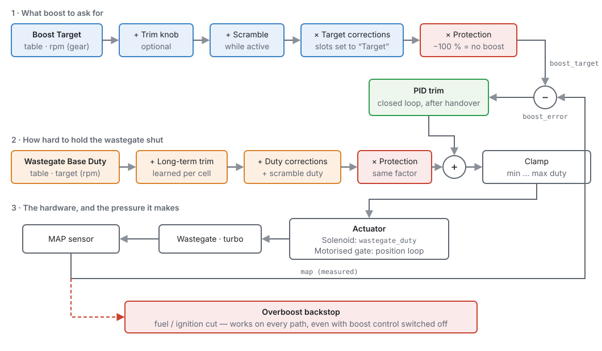
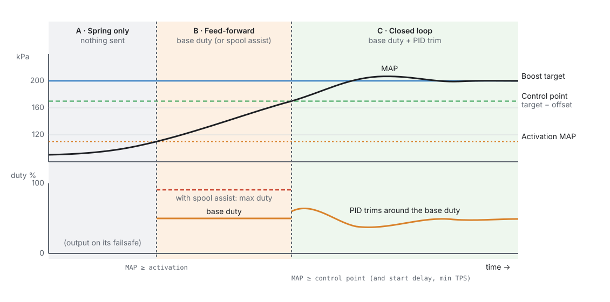
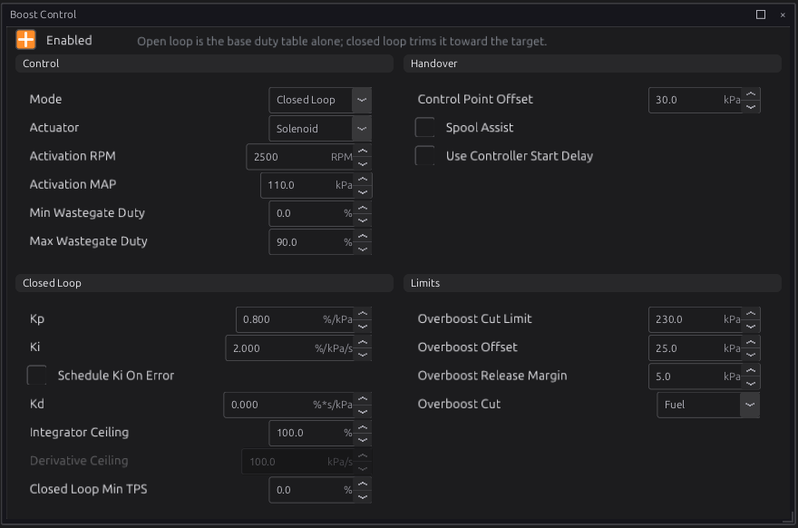
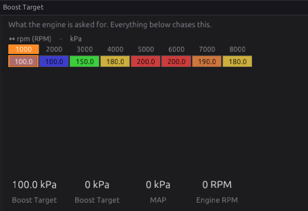
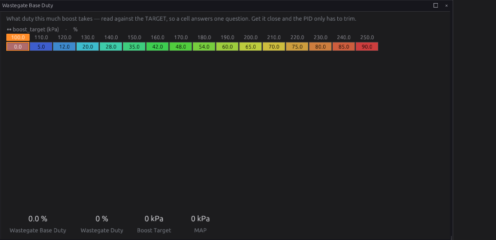
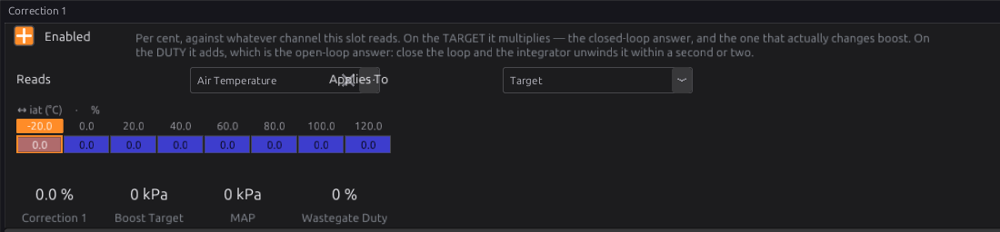
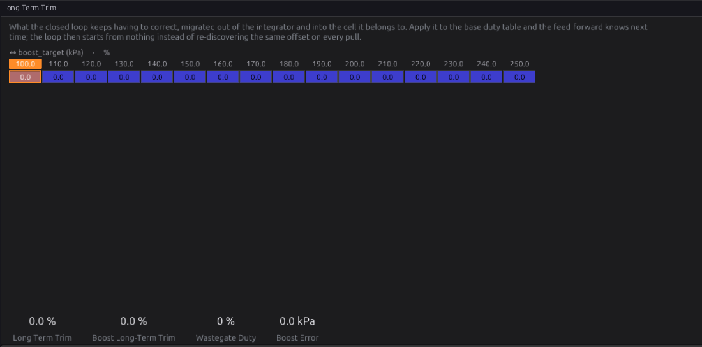

Boost¶
Basic → Advanced
In one sentence: the Boost module decides how much boost to ask for, drives the wastegate to get it, and cuts the engine if manifold pressure ever goes where it must not.
What it does¶
Basic
A turbocharger makes boost until its wastegate opens and lets exhaust bypass the turbine. On its own, the wastegate opens at its spring pressure, so an engine with no boost control runs "spring boost" everywhere. Boost control holds the wastegate shut harder, so boost can rise above spring pressure, and it can ask for different boost at different engine speeds, in different gears, or when the driver presses a button.
The module does four jobs:
- Chooses a target: how much manifold pressure to ask for right now, from the Boost Target table and any adjustments (a trim knob, a scramble button, correction curves, engine protection).
- Drives the wastegate: either a solenoid, given a duty cycle, or a motorised (electronic) wastegate, given a position.
- Closes the loop (optional): measures manifold pressure and trims the wastegate until boost matches the target, whatever the weather.
- Guards against overboost: cuts fuel, ignition or both if manifold pressure passes a hard limit or runs too far over target. This guard works even when boost control is switched off.
You need this module if your engine has a turbocharger (or supercharger with a bypass valve) and you want more than spring pressure, or different boost in different conditions. On a naturally aspirated engine, leave it off.
Boost is the fastest way to break an engine
Every setting in this chapter can raise cylinder pressure. Before you raise the target, make sure the fuel system can keep up (chapter 19), timing is safe for the boost you are asking for (chapter 39), and the overboost cut (below) is set. Raise boost in small steps and log every pull.
How it works¶
Intermediate

1 · The target¶
The target starts in the Boost Target table, read against engine speed (and, if you switch the second axis on, gear). Then, in this order:
- Trim knob (if assigned): adds up to Trim Authority kPa at full knob travel. The default authority is −100 kPa, so the knob can only ever take boost away.
- Scramble (if assigned): adds Scramble Boost Bump kPa while scramble is active.
- Target corrections: any of the four correction slots set to Target scale the boost part of the target by their summed per cent.
- Engine protection: when the protection system asks for less boost, the target is scaled down the same way. At −100 % the target becomes atmospheric pressure: no boost at all.
Advanced — per cent of boost, not of pressure
Corrections and protection scale only the part of the target above barometric pressure. A −10 % correction on a 200 kPa target at sea level (about 100 kPa of boost) removes 10 kPa, not 20 kPa, and a −50 % correction leaves half the boost, not none.
The final target is published as the output channel Boost Target boost_target, and the
difference between it and measured manifold pressure as Boost Error boost_error. Both are
published whenever the module is enabled and armed, even before boost control becomes active, so you
can always log them.
2 · Activation: when the module acts at all¶
The module only drives the wastegate when both of these are true:
- engine speed is at or above Activation RPM, and
- manifold pressure is at or above Activation MAP.
Below that, nothing is sent to the wastegate output, so it falls back to its failsafe: the wastegate on its spring. The closed-loop state is reset each time the engine drops out of activation.
3 · The feed-forward duty¶
Once active, the module works out a base duty from the Wastegate Base Duty table. This table is read against the boost target, not against engine speed: each cell answers the question "what duty does this much boost take?". An optional RPM axis covers the part the target cannot explain: the same boost can take more duty where there is less exhaust energy.
To the base duty it adds the learned long-term trim for the current cell, any correction slots set to Duty, and the Scramble Duty Bump while scramble is active. The whole sum is then scaled by the same protection factor as the target, so a protection pull-back also reduces duty in open loop.
In Open Loop mode that is the whole answer, clamped between Min Wastegate Duty and Max Wastegate Duty.
4 · Closed loop, and the handover¶
In Closed Loop mode a PID controller trims the base duty to remove the boost error. It does not start the moment the module activates. During the spool the error is large, and a loop that integrated it would still be winding up when boost arrived. So the loop takes over only when all of these pass:
- manifold pressure has reached the control point: the target minus Control Point Offset;
- throttle is at or above Closed Loop Min TPS (if that is not 0);
- the Controller Start Delay has elapsed since activation (if Use Controller Start Delay is on). The delay is a curve against RPM.

Before the handover, the output rests on the base duty, or on Max Wastegate Duty if Spool Assist is on. Spool assist holds the gate fully shut for the fastest possible spool, and then depends entirely on the control point being far enough below target for the loop to catch it.
While the loop is held off, its integrator is frozen, not reset. Boost falling back under the control point (a gear change on boost, say) keeps what the loop had learned, and nothing accumulates during the spool. Dropping out of activation altogether (below Activation RPM or MAP, as a real lift usually does) resets it, so each spool from off-boost starts fresh.
After the handover:
- Kp adds duty in proportion to the boost error, straight away.
- Ki accumulates the error over time to remove a steady offset. With Schedule Ki On Error on, Ki comes from the Integral Gain vs Error curve instead: gentle near target, firmer far from it.
- Kd reacts to how fast the error is changing, which damps overshoot. The rate it reacts to is limited by Derivative Ceiling, so one noisy MAP sample cannot spike the duty.
- The integrator is limited twice. It can never ask for more than the output can deliver (anti-windup to the min/max duty), and Integrator Ceiling can limit it further.
5 · Long-term trim¶
With Long-Term Trim Enabled, the module learns what the loop keeps having to correct. While the loop is in control and the engine sits in one base-duty cell for Learn Dwell, it moves Learn Rate per cent of the integrator into that cell's trim, and takes the same amount back out of the integrator. The total duty does not change at that moment; next time, the feed-forward already knows.
Learning only happens inside the gates you set: RPM between Learn Above RPM and Learn Below RPM, throttle at or above Learn Above TPS, and gear at or above Learn Above Gear. The gear test passes when the gear cannot be read, so a car without gear detection still learns. No cell may hold more than Trim Authority per cent either way. The trim is stored in the ECU's learned memory, not in the tune, so it survives reflashing the tune.
6 · The actuator¶
- Solenoid: the final duty goes out as Wastegate Duty
wastegate_duty, and an output assigned to that channel drives the solenoid (chapter 18). - Motorised Gate: the duty is read as "per cent held shut", so the position asked for is
100 % minus the duty. It is clamped to Gate Minimum/Maximum Position, limited to Gate Slew
Limit per second, and an inner PID (Gate Position Kp/Ki/Kd) drives an H-bridge until the
position sensor agrees. This needs Gate Position Signal set. With no position signal the
module falls back to sending solenoid duty on
wastegate_duty, and the motor is not driven. The position asked for is published aswastegate_pos_targetand the motor drive aswastegate_pos_duty.
A motorised gate must be spring-open
When the module is off, unarmed or below activation, it stops driving the gate. A gate whose spring holds it open then gives spring boost. A gate that stays wherever it was, or is held shut, gives uncontrolled boost. That is the one failure the pressure loop cannot see coming.
7 · The overboost backstop¶
Two independent limits, checked on every engine cycle, even with boost control off or unarmed:
- Overboost Cut Limit: an absolute manifold pressure the engine must never see. It does not move with the target.
- Overboost Offset: how far over the current target manifold pressure may go. This one follows the target down, so it still protects in low gears or under a protection pull-back, where the absolute limit is far away. It only applies while the target is at or above Activation MAP.
When either trips, the module asks for a fuel cut, an ignition cut or both (Overboost Cut). The cut holds until pressure falls Overboost Release Margin below the limit that tripped it, so it does not chatter. Either limit set to 0 is off.
This backstop is separate from the engine-protection overboost fault (P0234, chapter 29). Set both.
Before you start¶
Basic
You need:
- A MAP sensor that reads above atmospheric pressure, configured and calibrated (chapter 17). The module cannot run without manifold pressure. If it goes missing while boost control is enabled, it raises P1710 Boost: MAP signal missing.
- A boost control actuator, wired and assigned to an output (chapters 12 and 18):
- a wastegate solenoid on an output assigned to Wastegate Duty, or
- a motorised wastegate on an H-bridge output, plus a position sensor configured as a sensor.
- Safe fuel and timing at the boost you intend to run. Configure the fuel and ignition chapters first.
- Optional inputs, each configured as a signal before you can select it: an arm switch, a trim knob (an analog input read 0–100 %) and a scramble button.
Setting it up¶
Basic → Intermediate
The Boost pages are under Configuration ▸ Engine Functions ▸ Boost Control. Some pages only appear in the navigation tree when their feature is switched on. For example, Trim Learning appears once long-term trim is enabled, and Correction 1 once that slot is enabled.

- Set the overboost limits first, before anything can make boost. In Limits, set Overboost Cut Limit a safe margin above the most boost you will ever ask for. Set Overboost Offset to the overshoot you will tolerate over target (Example 1 uses 25 kPa). Choose Overboost Cut. Fuel is the default; Ignition is gentler on a lean-sensitive engine; Both is the hardest cut.
- Tick Enabled.
- Choose the actuator in Actuator: Solenoid or Motorised Gate.
- Set activation. Activation RPM (default 2000) and Activation MAP (default 110 kPa) define "on boost". Below both, the wastegate is left on its spring.
- Start in Open Loop. Leave Mode on Open Loop until the base duty table is roughly right (see Tuning it).
- Fill in the Boost Target table (Figure 24.4). The default is a single row against RPM. To make it different in each gear, switch its gear axis on.
- Fill in the Wastegate Base Duty table (Figure 24.5). Leave it at its defaults until you tune it.
- Set Min Wastegate Duty and Max Wastegate Duty. Leave Min at 0 unless your valve does nothing below some duty. Max (default 90 %) is the most any combination of table and trim can command.
- When the base table is close, switch Mode to Closed Loop and set the Handover and Closed Loop groups as described in Tuning it.


kPa is absolute
All pressures here are absolute: atmospheric is about 100 kPa at sea level, so 200 kPa is about 1 bar (14.5 psi) of boost. Subtract barometric pressure to get gauge boost.
Optional driver controls¶
- Arm Switch Signal: while this signal is not asserted, boost control does nothing and the turbo runs on spring pressure. The tune behind it is unchanged. The overboost backstop still works.
- Boost Trim Signal and Trim Authority: a dash knob that moves the target. The default authority of −100 kPa means the knob can only reduce boost, so a knob left turned up, or an input that fails high, cannot ask for more than the map allows.
- Scramble Input Signal: a button that adds Scramble Boost Bump kPa (and optionally Scramble Duty Bump). A tap runs for at least Scramble Hold Time. Holding the button cannot keep it on longer than Scramble Maximum Time, after which it is locked out for Scramble Rest Time. The rest only follows a run that hit the maximum, so normal taps re-arm straight away.
Corrections¶
Four correction slots each read a channel through a curve (for example intake air temperature) and apply the result either to the Target (per cent of boost) or to the Duty (points of duty). Set Correction N Applies To accordingly. A slot that is not enabled is not evaluated at all.

Worked examples¶
Intermediate
These are starting points, not finished tunes. Every engine and turbo is different. Log, check and adjust.
Example 1 — single turbo, internal wastegate, 3-port solenoid, closed loop
A street engine with about 70 kPa (10 psi) of spring pressure, aiming for about 100 kPa (15 psi) of boost.
| Setting | Value | Why |
|---|---|---|
| Actuator | Solenoid | a 3-port wastegate solenoid on a low-side output |
| Mode | Closed Loop | once the base table is close |
| Activation RPM / MAP | 2500 / 110 kPa | ignore light-load driving |
| Control Point Offset | 30 kPa | the loop takes over 30 kPa below target |
| Kp / Ki / Kd | 0.8 %/kPa / 2.0 %/kPa/s / 0 | gentle; the base table does the heavy work |
| Max Wastegate Duty | 90 % | the default ceiling |
| Overboost Cut Limit | 230 kPa | well above the 200 kPa target |
| Overboost Offset | 25 kPa | catches a stuck gate or split hose at any target |
| Overboost Cut | Fuel |
Boost Target: 200 kPa from 3500 rpm up, tapering in below that. This is the example shown in Figure 24.3.
Example 2 — motorised (electronic) wastegate
A spring-open electronic wastegate on an H-bridge, with its position sensor configured as a 0–100 % signal.
| Setting | Value | Why |
|---|---|---|
| Actuator | Motorised Gate | position control instead of duty |
| Gate Position Signal | the valve position sensor | without it the motor is not driven at all |
| Gate Minimum / Maximum Position | 0 / 100 % | full travel; narrow it if the valve binds at an end |
| Gate Slew Limit | 200 %/s | the valve ramps rather than slams |
| Gate Position Kp / Ki / Kd | start low and tune on the bench | step the target and watch the position trace |
Tune the inner position loop first, with the engine off: the gate should follow a stepped target quickly without overshoot. Then tune the boost loop exactly as for a solenoid.
Example 3 — track car with arm switch and scramble
- Arm Switch Signal: a dash switch, so boost control is only active on the track.
- Scramble Input Signal: a steering-wheel button; Scramble Boost Bump 20 kPa, Hold 5 s, Maximum 10 s, Rest 30 s: a short overtake boost that cannot be left on.
- Correction 1 on intake air temperature, applying to Target: −5 % at 50 °C, −15 % at 70 °C, to protect a hot charge.
Tuning it¶
Intermediate → Advanced
Log these channels for every pull: map, boost_target, boost_error, wastegate_duty, rpm,
tps, and when used, boost_ltt_pct or wastegate_pos_target/wastegate_pos_duty (chapter 42).
Step 1 — Base duty in open loop¶
- Set Mode to Open Loop, the Boost Target to your first goal, and the whole base duty table to 0 %. You now have spring boost everywhere.
- Do a full-throttle pull in a middle gear. Note the spring boost.
- For the target cell you are working on, raise the base duty a few per cent at a time until boost on a pull settles at the target. Work up the table, one target cell at a time.
- If boost at the same target differs between low and high RPM, switch the base table's RPM axis on and tune each row.
A good base table is the most important part of boost tuning. With it, the closed loop only corrects for the day's weather and can run gentle gains.
Step 2 — Close the loop¶
- Switch Mode to Closed Loop with Ki at 0 and Kd at 0.
- Set Control Point Offset to where you want the loop to take over. Start around 20–40 kPa. Too large and the loop fights the end of the spool; too small (especially with Spool Assist) and boost overshoots before the loop can catch it.
- Raise Kp until boost holds close to target, then back it off if it starts to oscillate.
- Add Ki slowly to remove the remaining steady error. If boost hunts around the target, lower Ki, or turn on Schedule Ki On Error and use a smaller Ki near zero error.
- Add Kd only if boost overshoots on a fast spool.
If the loop is doing all the work, the base table is wrong
A large, steady boost_error that the integrator keeps correcting means the base duty table needs
more work. Integrator Ceiling can force the issue by limiting how much the integrator alone may
add.
Step 3 — Let it learn (optional)¶
Once the loop is stable, enable Long-Term Trim to migrate the loop's standing corrections into the base table cell by cell. Keep Trim Authority small (default 15 %). A cell that hits the limit is telling you to fix the base table by hand.

Diagnostics¶
Intermediate
| Code | Meaning | What sets it | What to check |
|---|---|---|---|
| P1710 | Boost: MAP signal missing | Boost control is enabled and armed but manifold pressure is not valid | MAP sensor wiring and configuration (chapter 17); the module cannot run without it. It clears when MAP returns, or when boost control is switched off. |
| P0234 | Protection: overboost | Raised by engine protection, not by this module | Chapter 29. The Boost backstop cut is separate and does not set a code of its own. |
Output channels worth watching: Boost Target boost_target, Boost Error boost_error,
Wastegate Duty wastegate_duty, Boost Long-Term Trim boost_ltt_pct, Wastegate Position
Target wastegate_pos_target, Wastegate Motor Duty wastegate_pos_duty, and Protection
Boost Corr prot_boost_corr (what engine protection is asking for).
Troubleshooting¶
Basic → Advanced
| Symptom | Likely causes | Check |
|---|---|---|
Only spring boost, wastegate_duty stays at 0 |
Module off; not armed; below activation; output not assigned | Enabled; the arm switch signal; rpm and map against Activation RPM/MAP; the output assigned to Wastegate Duty (chapter 18) |
wastegate_duty moves but boost does not change |
Solenoid plumbed wrongly or not powered; wrong solenoid type | Solenoid wiring and power; hose routing for your solenoid (chapter 12); listen for it clicking |
| Boost overshoots on every spool | Spool Assist on with the control point too close; base duty too high; Ki too high | Turn Spool Assist off; raise Control Point Offset; lower base duty for that target |
| Boost oscillates around target | Kp or Ki too high | Lower Kp first, then Ki; consider Schedule Ki On Error |
| Boost sits below target in closed loop | Max Wastegate Duty reached; Integrator Ceiling too low; turbo out of breath | wastegate_duty against Max Wastegate Duty; the ceiling; whether the turbo can make the target at that RPM |
| Engine cuts on a good pull | Overboost Offset too tight for normal overshoot | Log map against boost_target; allow more offset or reduce overshoot |
| Boost drops for no reason | Engine protection pulling the target | prot_boost_corr and the active protection conditions (chapter 29) |
| P1710 | MAP signal missing | MAP sensor (chapter 17) |
| Motorised gate does not move | No position sensor selected; H-bridge output not assigned; gate PID too weak | Gate Position Signal must be set, or the module sends solenoid duty instead; the H-bridge output; Gate Position Kp |
Settings reference¶
Every Boost setting, generated from the definition the studio loads:
| Setting | What it does |
|---|---|
Boost Control Enabledboost.enabledRange: Off or On Default: Off |
Control boost by modulating the wastegate. Off, nothing is published for the wastegate at all, so the output falls to its failsafe and the turbo runs on spring pressure alone — which is the safe state, not a broken one. |
Modeboost.modeRange: one of: Open Loop, Closed Loop Default: Open Loop |
OPEN LOOP applies the base duty table and nothing else: predictable, entirely dependent on the table being right, and it drifts with air temperature and altitude. CLOSED LOOP adds a PID trim on the error between target and measured MAP, so it holds the target through conditions the table never saw. The base table still matters in closed loop — it is the feed-forward the trim works around, and a good one means the trim barely has to act. |
Activation RPMboost.activation_rpmRange: 0 to 12000 Default: 2000 Units: RPM |
Below this RPM the controller does not act and the loop is held reset. There is nothing to control down there — the turbo is not making boost and driving the wastegate solenoid just fights the spring. |
Activation MAPboost.activation_kpaRange: 0.0 to 600.0 Default: 110.0 Units: kPa |
Manifold pressure floor for acting. Together with the RPM gate it defines "actually on boost": below it the wastegate is already shut by its spring, so any duty is wasted and the integrator would wind up against a limit it cannot move. |
Control Point Offsetboost.control_point_kpaRange: 0.0 to 400.0 Default: 50.0 Units: kPa |
How far below target the closed loop stays out of it. While manifold pressure is more than this under target, the PID does not act and the output rests on the base duty alone — the spool is the feed-forward table's job, and a loop that tries to help during it can only wind up. Set too high the loop grabs control early and fights the last of the spool; set too low, and with Spool Assist on especially, the gate is still held hard shut when boost arrives and it sails past target. |
Spool Assistboost.spool_assistRange: Off or On Default: Off |
Below the control point, hold the wastegate fully shut instead of resting on the base duty. It is the fastest way to the target and the least forgiving: the gate is at 100 % right up to the handover, so everything then depends on the control point being far enough out for the loop to catch it. Start with it off and a good base table. |
Use Controller Start Delayboost.start_delay_enRange: Off or On Default: Off |
Hold the closed loop off for a time after activation, on top of the control point. The delay is a curve against RPM because it stands in for spool time, which is not one number — a gate that comes alive at 2000 rpm has seconds to wait, at 7000 rpm almost none. |
Kpboost.kpRange: 0.000 to 60.000 Default: 0.500 Units: %/kPa |
Proportional gain: wastegate duty per kPa of boost error, applied immediately. The first thing to raise if boost sits below target, the first thing to lower if it oscillates around it. |
Kiboost.kiRange: 0.000 to 60.000 Default: 2.000 Units: %/kPa/s |
Integral gain: duty per kPa of error per second. It removes the steady offset the feed-forward table leaves behind, so boost settles ON target instead of near it. Its authority is deliberately the headroom around the base duty, so anti-windup matches the final clamp and the integrator cannot store demand it will never be allowed to apply. |
Schedule Ki On Errorboost.ki_sched_enRange: Off or On Default: Off |
Take the integral gain from a curve against boost error instead of the single Ki above. It is the one gain worth scheduling: near target you want the integrator gentle, or it hunts around a setpoint it has already reached, and far from target you want it decisive, because that is a real offset the feed-forward failed to cover. One number cannot be both. Kp and Kd stay scalars until something proves otherwise. |
Kdboost.kdRange: 0.000 to 60.000 Default: 0.000 Units: %*s/kPa |
Derivative gain: duty per kPa-per-second of error. It damps the approach to target, which is what tames a spike on a fast-spooling turbo. It amplifies MAP noise, so it is the term to leave at zero unless overshoot is the actual problem. |
Max Wastegate Dutyboost.max_duty_pctRange: 0.0 to 100.0 Default: 90.0 Units: % |
Ceiling on wastegate duty, and also the top of the PID's authority. It is the mechanical safety on this loop: no combination of table and trim can command more than this, so a wound-up or mistuned controller cannot hold the gate shut indefinitely. |
Min Wastegate Dutyboost.min_duty_pctRange: 0.0 to 100.0 Default: 0.0 Units: % |
Floor on wastegate duty while the module is active. Most setups want 0 — the gate should be free to open completely. It earns its keep on a valve that needs some duty before it does anything at all, where a floor keeps the controller out of the dead band at the bottom of its range. Protection scales it down with everything else, so it can never hold the gate shut against a correction asking for less boost. |
Integrator Ceilingboost.iterm_max_pctRange: 0.0 to 100.0 Default: 100.0 Units: % |
How much duty the integral term alone may ask for (0 = only the loop's own authority limits it). The anti-windup already stops the integrator exceeding what the output can deliver; this is the tighter, separate question of how much of the answer should come from accumulated error rather than from the base table. Winding it down forces the feed-forward to be right — a loop leaning on a large integrator is one that is correcting for a base table nobody finished. |
Derivative Ceilingboost.max_deriv_kpa_sRange: 0.0 to 2000.0 Default: 100.0 Units: kPa/s |
The fastest rate of change the derivative term is allowed to believe (0 = no limit). D amplifies noise by definition — it differentiates — and a single ragged MAP sample on a fast-spooling turbo can otherwise produce a duty spike out of nothing. Clamping the RATE rather than the term means the limit is in units you can reason about from a log. |
Closed Loop Min TPSboost.min_tps_pctRange: 0.0 to 100.0 Default: 0.0 Units: % |
Throttle floor for closing the loop (0 = no throttle gate). Below it the output rests on the base duty, exactly as it does below the control point. It is for the part-throttle cruise where manifold pressure is nowhere near target through no fault of the wastegate — the loop would read that as a large standing error and wind up against it. A gate that is set but cannot be read (no throttle signal) keeps the loop OUT, which is the same safe state. |
Overboost Cut Limitboost.overboost_limit_kpaRange: 0.0 to 600.0 Default: 250.0 Units: kPa |
MAP above which a hard fuel/ign cut is requested (0 = disabled). An ABSOLUTE ceiling: it is the number the engine cannot survive, so it does not move with the target and a low-gear or protection-reduced target does not lower it. |
Overboost Offsetboost.overboost_offset_kpaRange: 0.0 to 200.0 Default: 0.0 Units: kPa |
How far OVER the target manifold pressure may go before a cut is requested (0 = disabled). Unlike the absolute limit this tracks the target down, so it still protects in the low gears and under a protection pull-back where a fixed ceiling is miles away. Leave enough room for the overshoot a healthy loop makes on a fast spool, or it will cut on a good pull. |
Overboost Release Marginboost.overboost_hyst_kpaRange: 0.0 to 50.0 Default: 5.0 Units: kPa |
Once the overboost cut has tripped it holds until manifold pressure is this far BELOW the limit. Without a margin the cut chatters on and off at the limit every frame, which is harder on the engine than either state. |
Overboost Cutboost.overboost_cut_methodRange: one of: Fuel, Ignition, Both Default: Fuel |
What gets cut when the hard overboost limit is exceeded. This is a LAST RESORT backstop, in addition to the DTC path — by the time it acts the boost control has already failed, so choose the cut that stops boost fastest for the hardware rather than the one that is kindest. |
Arm Switch Signalboost.arm_sigRange: -1 to 32767 Default: -1 |
A signal that must be asserted for boost control to act at all (-1 = always armed). Unarmed, nothing is published for the wastegate and the turbo runs on spring pressure — the same safe state as switching the module off, but on a switch the driver can reach. It is a gate, not a mode: everything else about the tune is unchanged while it is open. |
Boost Trim Signalboost.trim_sigRange: -1 to 32767 Default: -1 |
An analog input, read as 0-100 %, that moves the boost target by up to Trim Authority (-1 = no trim). A dashboard knob, in other words. At 0 % it does nothing, so the knob's off position is its own bottom stop rather than some midpoint nobody can find by feel. |
Trim Authorityboost.trim_max_kpaRange: -200.0 to 200.0 Default: -100.0 Units: kPa |
How far the trim knob may move the target at full travel. NEGATIVE is the sensible direction and the shipped one: the knob then only ever takes boost away, so a knob that has been left somewhere, or an input that has failed high, cannot ask the engine for more than the tune says. A positive value means the driver can add boost the map never authorised, which is a decision rather than a default. |
Scramble Input Signalboost.scramble_sigRange: -1 to 32767 Default: -1 |
A momentary 0/1 signal that bumps boost while it is active (-1 = none). The bump is not simply "while held" — see the hold, maximum and rest times, which together make a button that can be tapped and cannot be leant on. |
Scramble Boost Bumpboost.scramble_kpaRange: 0.0 to 200.0 Default: 30.0 Units: kPa |
How much the boost target is raised while scramble is active. It adds to whatever the target table gives, so the shape of the map is preserved and only the level moves. |
Scramble Duty Bumpboost.scramble_base_pctRange: 0.0 to 100.0 Default: 0.0 Units: % |
Extra wastegate duty while scramble is active, on top of the target bump. The target bump says what to aim for and the loop takes time to get there; this puts duty in immediately, which is what makes the button feel like it did something. Useless in open loop, where the target bump does nothing and this is the whole effect. |
Scramble Hold Timeboost.scramble_hold_sRange: 0.0 to 60.0 Default: 5.0 Units: s |
The shortest a scramble lasts once it starts, however briefly the button was pressed. It is what turns a momentary switch into a TAP: press and let go, and the bump still runs its course instead of ending with your thumb. |
Scramble Maximum Timeboost.scramble_max_sRange: 0.0 to 60.0 Default: 10.0 Units: s |
The longest one scramble may last, however long the button is held (0 = no limit). This is the half that stops the button being a permanent boost switch — hold it down and the bump ends anyway, and cannot start again until the rest time has passed. |
Scramble Rest Timeboost.scramble_rest_sRange: 0.0 to 60.0 Default: 0.0 Units: s |
How long scramble is locked out after it has run its maximum time. It only applies to a bump that was ENDED by the maximum — a normal press that finishes on its own re-arms immediately — so this is the cool-down between sustained uses, not a delay between taps. |
Actuatorboost.output_modeRange: one of: Solenoid, Motorised Gate Default: Solenoid |
What is on the end of the wiring. A SOLENOID is given a duty and the wastegate spring does the rest, which is what the whole of the rest of this module is expressed in. A MOTORISED GATE is given a position instead, and an inner loop drives the motor until the valve reaches it — that needs a position sensor and an H-bridge, and the gate must be spring-OPEN, because an unpowered motor holding a shut valve is the one failure this cannot protect you from. |
Gate Position Signalboost.gate_pos_sigRange: -1 to 32767 Default: -1 |
The sensor the inner loop closes on, reading 0-100 % of valve travel (-1 = none, and a motorised gate without one does not run at all). It is the difference between a servo and an open-loop guess: without feedback nothing knows whether the valve moved, and a gate jammed shut looks exactly like a gate doing its job. |
Gate Minimum Positionboost.gate_min_pos_pctRange: 0.0 to 100.0 Default: 0.0 Units: % |
The most SHUT the valve may be commanded. Above zero it keeps the motor off its hard closed stop, which is where a position loop stalls against something it cannot move and winds up trying. |
Gate Maximum Positionboost.gate_max_pos_pctRange: 0.0 to 100.0 Default: 100.0 Units: % |
The most OPEN the valve may be commanded. Reducing it is not a safety measure — less opening is more boost — so it is only for keeping the motor off its other hard stop. |
Gate Slew Limitboost.gate_rate_pct_sRange: 0 to 10000 Default: 0 Units: %/s |
How fast the commanded position may move (0 = no limit). It damps a step demand so the valve ramps rather than slamming, which matters more here than on a throttle: the gate is in the exhaust stream and the loop above it can change its mind quickly. |
Gate Position Kpboost.gate_kpRange: 0.000 to 60.000 Default: 2.000 Units: %/% |
Proportional gain of the inner position loop: motor duty per per cent of position error. The first thing to raise if the valve is slow to arrive, the first to lower if it buzzes around its target. |
Gate Position Kiboost.gate_kiRange: 0.000 to 60.000 Default: 4.000 Units: %/%/s |
Integral gain of the inner position loop. It is what gets the valve the last per cent against its spring, which proportional gain alone will always leave short. |
Gate Position Kdboost.gate_kdRange: 0.000 to 60.000 Default: 0.000 Units: %*s/% |
Derivative gain of the inner position loop, damping the approach. Leave it at zero unless the valve overshoots its target — position feedback is noisy and this differentiates it. |
Gate Integral Clampboost.gate_iterm_max_pctRange: 0.0 to 100.0 Default: 50.0 Units: % |
Anti-windup for the inner loop: the integral term is held to this much motor duty. It is what stops a valve jammed by carbon from accumulating full drive against something it is never going to move. |
Long-Term Trim Enabledboost.ltt_enRange: Off or On Default: Off |
Learn the standing part of the closed-loop correction into a table, so the feed-forward improves instead of the loop re-discovering the same offset on every pull. Off, the learned table is still applied — switching learning off freezes what it knows rather than discarding it. |
Learn Above TPSboost.ltt_min_tps_pctRange: 0.0 to 100.0 Default: 80.0 Units: % |
Throttle floor for learning. Below it the manifold is nowhere near target for reasons that have nothing to do with the wastegate, and anything learned there is a correction for the driver's right foot. |
Learn Above RPMboost.ltt_min_rpmRange: 0 to 12000 Default: 2500 Units: RPM |
Bottom of the rpm window in which learning is allowed. Below it the turbo is still coming up and the loop is correcting for spool, which is not a persistent property of anything. |
Learn Below RPMboost.ltt_max_rpmRange: 0 to 12000 Default: 7000 Units: RPM |
Top of the rpm window. Near the limiter the picture is contaminated by cuts and by whatever protection is doing, so a reading there is not the wastegate's fault either. |
Learn Above Gearboost.ltt_min_gearRange: 0 to 10 Default: 0 |
Lowest gear in which learning is allowed (0 = any, and any is right on a car with no gear signal). The low gears are where the target is deliberately reduced and where the tyres are doing something other than holding the car straight, so they are the worst place to be drawing conclusions about the turbo. |
Learn Dwellboost.ltt_dwell_msRange: 0 to 60000 Default: 1500 Units: ms |
How long the operating point must sit in one cell before anything is written to it. It is what stops a sweep through the map smearing one cell's correction across all of them — the loop needs time to settle before its integrator means what it says. |
Learn Rateboost.ltt_learn_pctRange: 0.0 to 100.0 Default: 25.0 Units: % |
How much of the integrator migrates into the cell each time the dwell completes. Not all of it: the integrator is a noisy estimate of a steady offset, so a fraction at a time averages several visits and a full transfer would let one bad pull rewrite the cell. |
Trim Authorityboost.ltt_authority_pctRange: 0.0 to 100.0 Default: 15.0 Units: % |
The most any one learned cell may hold, either way. It is the limit on how wrong the base table is allowed to be before somebody has to go and fix it properly — a trim quietly carrying 30 points of duty is not a trim, it is the tune. |
Correction 1 Enabledboost.corr1_enRange: Off or On Default: Off |
Read correction slot 1 and apply it. Off, the curve is not evaluated at all — which is a different thing from a curve of zeroes, and the page says so rather than leaving you to infer it from the cells. |
Correction 1 Applies Toboost.corr1_appliesRange: one of: Target, Duty Default: Target |
Whether slot 1 trims the boost TARGET or the wastegate DUTY. Target is the closed-loop answer: it changes what the engine is asked for and the loop then goes and gets it. Duty is the open-loop answer: it changes what the valve is driven with. In closed loop a duty correction is unwound by the integrator within a second or two, so it shapes the approach and not the boost — if you want less boost when it is hot, correct the target. |
Correction 2 Enabledboost.corr2_enRange: Off or On Default: Off |
Read correction slot 2 and apply it. Off, the curve is not evaluated at all — which is a different thing from a curve of zeroes, and the page says so rather than leaving you to infer it from the cells. |
Correction 2 Applies Toboost.corr2_appliesRange: one of: Target, Duty Default: Target |
Whether slot 2 trims the boost TARGET or the wastegate DUTY. Target is the closed-loop answer: it changes what the engine is asked for and the loop then goes and gets it. Duty is the open-loop answer: it changes what the valve is driven with. In closed loop a duty correction is unwound by the integrator within a second or two, so it shapes the approach and not the boost — if you want less boost when it is hot, correct the target. |
Correction 3 Enabledboost.corr3_enRange: Off or On Default: Off |
Read correction slot 3 and apply it. Off, the curve is not evaluated at all — which is a different thing from a curve of zeroes, and the page says so rather than leaving you to infer it from the cells. |
Correction 3 Applies Toboost.corr3_appliesRange: one of: Target, Duty Default: Target |
Whether slot 3 trims the boost TARGET or the wastegate DUTY. Target is the closed-loop answer: it changes what the engine is asked for and the loop then goes and gets it. Duty is the open-loop answer: it changes what the valve is driven with. In closed loop a duty correction is unwound by the integrator within a second or two, so it shapes the approach and not the boost — if you want less boost when it is hot, correct the target. |
Correction 4 Enabledboost.corr4_enRange: Off or On Default: Off |
Read correction slot 4 and apply it. Off, the curve is not evaluated at all — which is a different thing from a curve of zeroes, and the page says so rather than leaving you to infer it from the cells. |
Correction 4 Applies Toboost.corr4_appliesRange: one of: Target, Duty Default: Target |
Whether slot 4 trims the boost TARGET or the wastegate DUTY. Target is the closed-loop answer: it changes what the engine is asked for and the loop then goes and gets it. Duty is the open-loop answer: it changes what the valve is driven with. In closed loop a duty correction is unwound by the integrator within a second or two, so it shapes the approach and not the boost — if you want less boost when it is hot, correct the target. |
Boost Target X Channelboost.boost_target_table_x_srcRange: -1 to 32767 Default: 319 |
WHICH SIGNAL the X axis of 'Boost Target' is looked up on. The axis holds the breakpoints; this says what is compared against them, so changing it re-points the table at a different quantity without moving a single cell — and the breakpoints, chosen for the old signal's range and units, will almost certainly need redrawing. |
Boost Target Y Channelboost.boost_target_table_y_srcRange: -1 to 32767 Default: 131 |
WHICH SIGNAL the Y axis of 'Boost Target' is looked up on. The axis holds the breakpoints; this says what is compared against them, so changing it re-points the table at a different quantity without moving a single cell — and the breakpoints, chosen for the old signal's range and units, will almost certainly need redrawing. |
Boost Target Y Axis Enabledboost.boost_target_table_y_enRange: Off or On Default: Off |
Use the Y axis of 'Boost Target' as a real dimension. Off, the table collapses to a curve on its remaining axes and this one is ignored entirely — the right default for most optional axes, since a dimension nobody calibrates is a set of duplicate rows that still has to be kept in step. |
Wastegate Base Duty X Channelboost.base_boost_duty_table_x_srcRange: -1 to 32767 Default: 13 |
WHICH SIGNAL the X axis of 'Wastegate Base Duty' is looked up on. The axis holds the breakpoints; this says what is compared against them, so changing it re-points the table at a different quantity without moving a single cell — and the breakpoints, chosen for the old signal's range and units, will almost certainly need redrawing. |
Wastegate Base Duty Y Channelboost.base_boost_duty_table_y_srcRange: -1 to 32767 Default: 319 |
WHICH SIGNAL the Y axis of 'Wastegate Base Duty' is looked up on. The axis holds the breakpoints; this says what is compared against them, so changing it re-points the table at a different quantity without moving a single cell — and the breakpoints, chosen for the old signal's range and units, will almost certainly need redrawing. |
Wastegate Base Duty Y Axis Enabledboost.base_boost_duty_table_y_enRange: Off or On Default: Off |
Use the Y axis of 'Wastegate Base Duty' as a real dimension. Off, the table collapses to a curve on its remaining axes and this one is ignored entirely — the right default for most optional axes, since a dimension nobody calibrates is a set of duplicate rows that still has to be kept in step. |
Controller Start Delay X Channelboost.start_delay_table_x_srcRange: -1 to 32767 Default: 319 |
WHICH SIGNAL the X axis of 'Controller Start Delay' is looked up on. The axis holds the breakpoints; this says what is compared against them, so changing it re-points the table at a different quantity without moving a single cell — and the breakpoints, chosen for the old signal's range and units, will almost certainly need redrawing. |
Integral Gain vs Error X Channelboost.ki_table_x_srcRange: -1 to 32767 Default: 455 |
WHICH SIGNAL the X axis of 'Integral Gain vs Error' is looked up on. The axis holds the breakpoints; this says what is compared against them, so changing it re-points the table at a different quantity without moving a single cell — and the breakpoints, chosen for the old signal's range and units, will almost certainly need redrawing. |
Correction 1 X Channelboost.corr1_table_x_srcRange: -1 to 32767 Default: 134 |
WHICH SIGNAL the X axis of 'Correction 1' is looked up on. The axis holds the breakpoints; this says what is compared against them, so changing it re-points the table at a different quantity without moving a single cell — and the breakpoints, chosen for the old signal's range and units, will almost certainly need redrawing. |
Correction 2 X Channelboost.corr2_table_x_srcRange: -1 to 32767 Default: 61 |
WHICH SIGNAL the X axis of 'Correction 2' is looked up on. The axis holds the breakpoints; this says what is compared against them, so changing it re-points the table at a different quantity without moving a single cell — and the breakpoints, chosen for the old signal's range and units, will almost certainly need redrawing. |
Correction 3 X Channelboost.corr3_table_x_srcRange: -1 to 32767 Default: 131 |
WHICH SIGNAL the X axis of 'Correction 3' is looked up on. The axis holds the breakpoints; this says what is compared against them, so changing it re-points the table at a different quantity without moving a single cell — and the breakpoints, chosen for the old signal's range and units, will almost certainly need redrawing. |
Correction 4 X Channelboost.corr4_table_x_srcRange: -1 to 32767 Default: 337 |
WHICH SIGNAL the X axis of 'Correction 4' is looked up on. The axis holds the breakpoints; this says what is compared against them, so changing it re-points the table at a different quantity without moving a single cell — and the breakpoints, chosen for the old signal's range and units, will almost certainly need redrawing. |
Boost Long-Term Trim X Channelboost.boost_ltt_x_srcRange: -1 to 32767 Default: 13 |
WHICH SIGNAL the X axis of 'Boost Long-Term Trim' is looked up on. The axis holds the breakpoints; this says what is compared against them, so changing it re-points the table at a different quantity without moving a single cell — and the breakpoints, chosen for the old signal's range and units, will almost certainly need redrawing. |
Boost Long-Term Trim Y Channelboost.boost_ltt_y_srcRange: -1 to 32767 Default: 319 |
WHICH SIGNAL the Y axis of 'Boost Long-Term Trim' is looked up on. The axis holds the breakpoints; this says what is compared against them, so changing it re-points the table at a different quantity without moving a single cell — and the breakpoints, chosen for the old signal's range and units, will almost certainly need redrawing. |
Start Delay RPM Axis binsboost.delay_rpm_axis_nRange: 2 to 16 Default: 8 |
How many breakpoints of 'Start Delay RPM Axis' are LIVE, out of 16 allocated. Shrinking the axis does not delete the values past the end — they stay in the tune and reappear if it is grown again. Every table sharing this axis is resized with it. Fewer, well-placed breakpoints beat many evenly-spaced ones: resolution is only worth spending where the surface actually bends. |
Boost RPM Axis binsboost.boost_rpm_axis_nRange: 2 to 16 Default: 8 |
How many breakpoints of 'Boost RPM Axis' are LIVE, out of 16 allocated. Shrinking the axis does not delete the values past the end — they stay in the tune and reappear if it is grown again. Every table sharing this axis is resized with it. Fewer, well-placed breakpoints beat many evenly-spaced ones: resolution is only worth spending where the surface actually bends. |
Boost 2nd Axis (Gear — off by default) binsboost.boost_gear_axis_nRange: 2 to 8 Default: 8 |
How many breakpoints of 'Boost 2nd Axis (Gear — off by default)' are LIVE, out of 8 allocated. Shrinking the axis does not delete the values past the end — they stay in the tune and reappear if it is grown again. Every table sharing this axis is resized with it. Fewer, well-placed breakpoints beat many evenly-spaced ones: resolution is only worth spending where the surface actually bends. |
Base Duty Target Axis binsboost.base_targ_axis_nRange: 2 to 16 Default: 16 |
How many breakpoints of 'Base Duty Target Axis' are LIVE, out of 16 allocated. Shrinking the axis does not delete the values past the end — they stay in the tune and reappear if it is grown again. Every table sharing this axis is resized with it. Fewer, well-placed breakpoints beat many evenly-spaced ones: resolution is only worth spending where the surface actually bends. |
Base Duty RPM Axis binsboost.base_rpm_axis_nRange: 2 to 16 Default: 8 |
How many breakpoints of 'Base Duty RPM Axis' are LIVE, out of 16 allocated. Shrinking the axis does not delete the values past the end — they stay in the tune and reappear if it is grown again. Every table sharing this axis is resized with it. Fewer, well-placed breakpoints beat many evenly-spaced ones: resolution is only worth spending where the surface actually bends. |
Ki Error Axis binsboost.ki_err_axis_nRange: 2 to 16 Default: 8 |
How many breakpoints of 'Ki Error Axis' are LIVE, out of 16 allocated. Shrinking the axis does not delete the values past the end — they stay in the tune and reappear if it is grown again. Every table sharing this axis is resized with it. Fewer, well-placed breakpoints beat many evenly-spaced ones: resolution is only worth spending where the surface actually bends. |
Correction 1 Axis binsboost.corr1_axis_nRange: 2 to 16 Default: 8 |
How many breakpoints of 'Correction 1 Axis' are LIVE, out of 16 allocated. Shrinking the axis does not delete the values past the end — they stay in the tune and reappear if it is grown again. Every table sharing this axis is resized with it. Fewer, well-placed breakpoints beat many evenly-spaced ones: resolution is only worth spending where the surface actually bends. |
Correction 2 Axis binsboost.corr2_axis_nRange: 2 to 16 Default: 8 |
How many breakpoints of 'Correction 2 Axis' are LIVE, out of 16 allocated. Shrinking the axis does not delete the values past the end — they stay in the tune and reappear if it is grown again. Every table sharing this axis is resized with it. Fewer, well-placed breakpoints beat many evenly-spaced ones: resolution is only worth spending where the surface actually bends. |
Correction 3 Axis binsboost.corr3_axis_nRange: 2 to 16 Default: 8 |
How many breakpoints of 'Correction 3 Axis' are LIVE, out of 16 allocated. Shrinking the axis does not delete the values past the end — they stay in the tune and reappear if it is grown again. Every table sharing this axis is resized with it. Fewer, well-placed breakpoints beat many evenly-spaced ones: resolution is only worth spending where the surface actually bends. |
Correction 4 Axis binsboost.corr4_axis_nRange: 2 to 16 Default: 8 |
How many breakpoints of 'Correction 4 Axis' are LIVE, out of 16 allocated. Shrinking the axis does not delete the values past the end — they stay in the tune and reappear if it is grown again. Every table sharing this axis is resized with it. Fewer, well-placed breakpoints beat many evenly-spaced ones: resolution is only worth spending where the surface actually bends. |
Boost Targetboost.boost_target_tableRange: 0.0 to 1000.0 Default: 8 × 8 table Units: kPa |
The boost being asked for at each operating point. Everything else in this module serves this table: closed loop drives the error against it, and the protection correction scales it down. It is a TARGET, not a limit — the overboost cut is what enforces a ceiling. |
Wastegate Base Dutyboost.base_boost_duty_tableRange: 0.0 to 100.0 Default: 8 × 16 table Units: % |
The wastegate duty that gets close to target on its own, before any closed-loop trim. In open loop this IS the control. In closed loop it is the feed-forward, and getting it approximately right is what lets the PID run gentle gains and still respond quickly — a good base table means the trim only ever corrects for the day's weather. It is read against the TARGET, so every cell answers one question: what duty does this much boost take. The RPM axis is there for the part the target cannot explain — the same boost costs more duty where there is less exhaust energy — and is off by default, because a dimension nobody calibrates is a set of duplicate rows that still has to be kept in step. |
Controller Start Delayboost.start_delay_tableRange: 0.00 to 3.00 Default: 8-point curve Units: s |
How long after activation the closed loop stays out of it, against the RPM the gate came alive at. It is measured from activation, runs alongside the control point rather than instead of it, and whichever is still unsatisfied keeps the loop out — so a gate that reaches the control point early still waits, and one that never reaches it is never handed over however long the delay was. |
Start Delay RPM Axisboost.delay_rpm_axisRange: 0 to 0 Default: 8-point curve Units: RPM |
RPM breakpoints for the start delay. Worth concentrating where the turbo actually comes alive, since that is the only region where the delay differs from its floor. |
Boost RPM Axisboost.boost_rpm_axisRange: 0 to 0 Default: 8-point curve Units: RPM |
RPM breakpoints for the boost target table. Worth concentrating through the spool-up region, where the achievable target changes fastest. |
Boost 2nd Axis (Gear — off by default)boost.boost_gear_axisRange: 0 to 0 Default: 8-point curve |
Optional second axis for the boost target — gear by default, and off by default. Enabling it is how boost is limited in the low gears where the tyres cannot take full torque, without touching the target anywhere else. |
Base Duty Target Axisboost.base_targ_axisRange: 0 to 0 Default: 16-point curve Units: kPa |
Target-pressure breakpoints for the base duty table, absolute. The bottom wants to sit at or just under atmospheric so the table has somewhere to say "asking for nothing, drive nothing"; the top wants to reach past the most this engine will ever be asked for, because a table cannot extrapolate — it holds its end cell, and an end cell short of the target is a feed-forward that quietly stops growing. |
Base Duty RPM Axisboost.base_rpm_axisRange: 0 to 0 Default: 8-point curve Units: RPM |
RPM breakpoints for the base duty table. It is a separate axis from the target table's on purpose: what the wastegate needs is shaped by the turbo and the gate, not by what is being asked for. |
Integral Gain vs Errorboost.ki_tableRange: 0.000 to 60.000 Default: 8-point curve Units: %/kPa/s |
Integral gain against how far boost is from target, used in place of the Ki scalar while scheduling is on. Gentle in the middle and firmer at the ends is the shape that matters: close to target a large Ki hunts, because it keeps integrating a difference that is mostly noise, while a long way from target the same difference is a real offset the feed-forward did not cover and there is nothing to be gained by creeping up on it. The shipped curve is that shape around the scalar default, not a measured tune. |
Ki Error Axisboost.ki_err_axisRange: 0 to 0 Default: 8-point curve Units: kPa |
Boost error breakpoints for the integral gain curve — target minus manifold pressure, so NEGATIVE is over target. Worth keeping a pair of bins close either side of zero: that gap is what decides how near the setpoint the loop stops pushing, and it is where hunting is either designed out or designed in. |
Correction 1boost.corr1_tableRange: -100.0 to 100.0 Default: 8-point curve Units: % |
Correction slot 1, shipped pointed at air temperature and correcting nothing. Per cent: on the target it multiplies (-10 % asks for a tenth less boost, whatever the target was), on the duty it adds (+5 % is five more points of duty). Re-point its channel and it is a correction on something else entirely — the curve does not care what it is reading. |
Correction 1 Axisboost.corr1_axisRange: 0 to 0 Default: 8-point curve |
Breakpoints for correction slot 1, in whatever units its channel publishes — the axis carries none of its own, because the slot is whatever it is pointed at. Shipped for air temperature; re-point the channel and these want redrawing for the new one's range. |
Correction 2boost.corr2_tableRange: -100.0 to 100.0 Default: 8-point curve Units: % |
Correction slot 2, shipped pointed at coolant temperature and correcting nothing. Per cent: on the target it multiplies (-10 % asks for a tenth less boost, whatever the target was), on the duty it adds (+5 % is five more points of duty). Re-point its channel and it is a correction on something else entirely — the curve does not care what it is reading. |
Correction 2 Axisboost.corr2_axisRange: 0 to 0 Default: 8-point curve |
Breakpoints for correction slot 2, in whatever units its channel publishes — the axis carries none of its own, because the slot is whatever it is pointed at. Shipped for coolant temperature; re-point the channel and these want redrawing for the new one's range. |
Correction 3boost.corr3_tableRange: -100.0 to 100.0 Default: 8-point curve Units: % |
Correction slot 3, shipped pointed at gear and correcting nothing. Per cent: on the target it multiplies (-10 % asks for a tenth less boost, whatever the target was), on the duty it adds (+5 % is five more points of duty). Re-point its channel and it is a correction on something else entirely — the curve does not care what it is reading. |
Correction 3 Axisboost.corr3_axisRange: 0 to 0 Default: 8-point curve |
Breakpoints for correction slot 3, in whatever units its channel publishes — the axis carries none of its own, because the slot is whatever it is pointed at. Shipped for gear; re-point the channel and these want redrawing for the new one's range. |
Correction 4boost.corr4_tableRange: -100.0 to 100.0 Default: 8-point curve Units: % |
Correction slot 4, shipped pointed at throttle position and correcting nothing. Per cent: on the target it multiplies (-10 % asks for a tenth less boost, whatever the target was), on the duty it adds (+5 % is five more points of duty). Re-point its channel and it is a correction on something else entirely — the curve does not care what it is reading. |
Correction 4 Axisboost.corr4_axisRange: 0 to 0 Default: 8-point curve |
Breakpoints for correction slot 4, in whatever units its channel publishes — the axis carries none of its own, because the slot is whatever it is pointed at. Shipped for throttle position; re-point the channel and these want redrawing for the new one's range. |
Boost Long-Term Trimboost.boost_lttRange: -100.0 to 100.0 Default: 16 × 16 table Units: % |
Learned trim (runtime RAM, persisted to SD; not part of the tune). |
Related¶
- Chapter 17 — Sensors and calibration (the MAP sensor)
- Chapter 18 — Outputs and the pin system (assigning the wastegate output)
- Chapter 12 — Wiring outputs (solenoids and H-bridges)
- Chapter 29 — Engine protection (P0234 and the boost pull-back)
- Chapter 39 — Tuning ignition (timing under boost)
- Chapter 42 — Datalogging and analysis